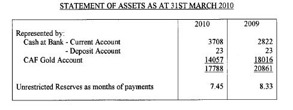
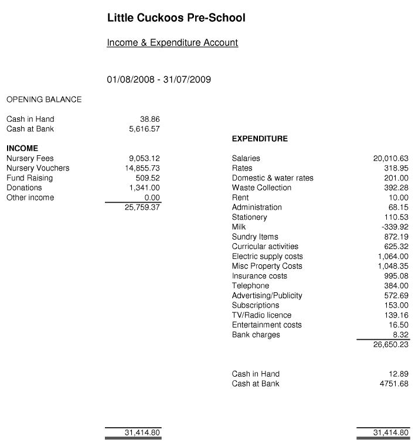
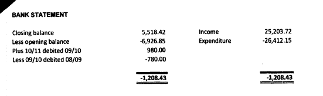

Assets and Liabilities for Receipts and Payments Accounts#
The quality of the balance sheet for receipts and payments accounts varies considerably.
However, it should include what the SORP calls: "a statement of assets and liabilities" which should list assets and liabilities. At the very minimum you should be able to find a figure for total assets and total liabilities.
The template includes:
- Cash funds
- Other monetary assets
- Investment assets
- Assets retained for the charity's own use
- Liabilities
Where liabilities are ommitted assume they are zero. In order to make the entry form validate, liabilities should be entered as negative numbers - e.g -123,000.
The balances of various bank accounts may be listed separately - for instance a savings account and a current account. We do not need a breakdown for each amount, merely the total. Balances in bank accounts should be regarded as Cash funds.
Investment assets will either be labelled as "investments" or something similar such as "securities" or "stocks and shares"
In the example below, the total 17,788 for the current year and 20,861 for the prior year should be entered as cash funds.

Quirky receipts and payments accounts#
In some unfortunate cases, this guidance is ignored and bank balances are included as income and expenditure.
For any year, the current assets should be the closing balance of all of their bank accounts at the end of the year.
So in the example below, the figures to enter as assets are the two in the expenditure column - Cash in hand 12.89, and Cash at Bank 4751.68. (rounded to the nearest pound)
The "opening balances" should be the closing balances for the prior year.

The charity below has managed to disclose this information in an even more idiosyncratic manner:

The change in assets should add up to the difference between income and expenditure - i.e if they report a deficit of 1,208 as above, their bank balance should have gone down by the same amount.
But it is not clear what the accruals included below represent that adjust the total by £200 - they were possibly accruals from the last financial year. So either their opening balance was really £6,727, or their closing balance is really £5,719.
In this instance I would probably enter £5,518 for the current year and £6,727 for the prior year.